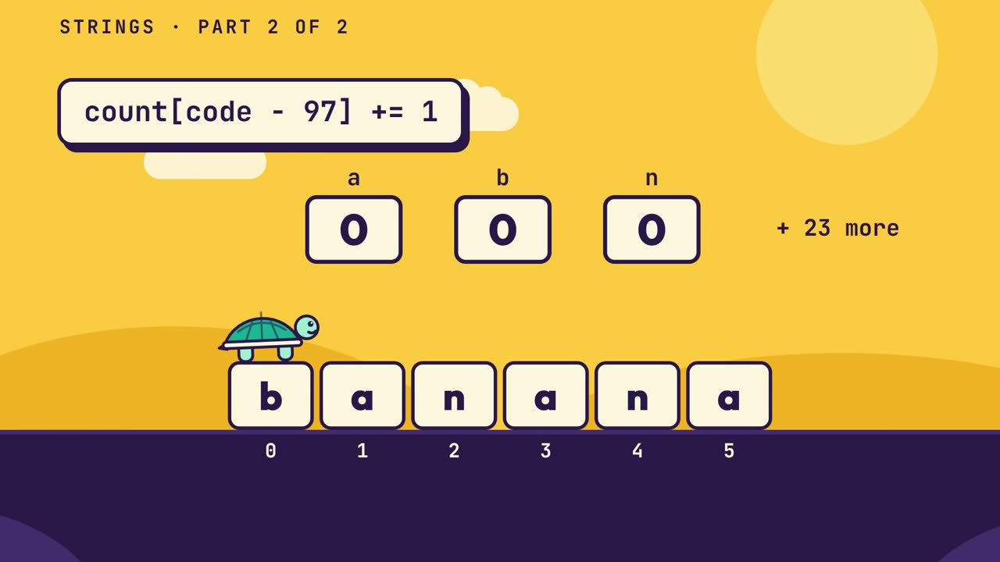
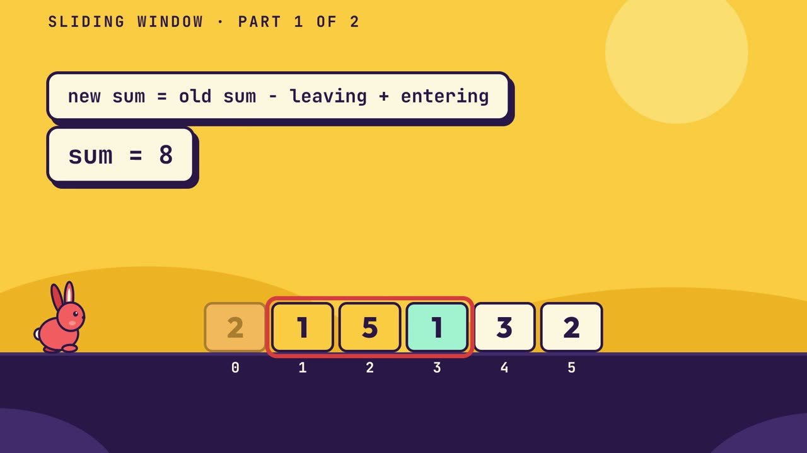
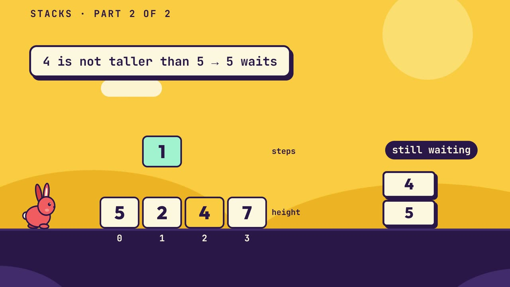
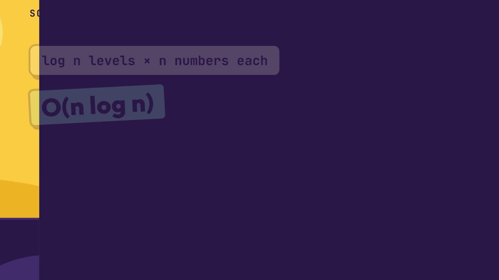
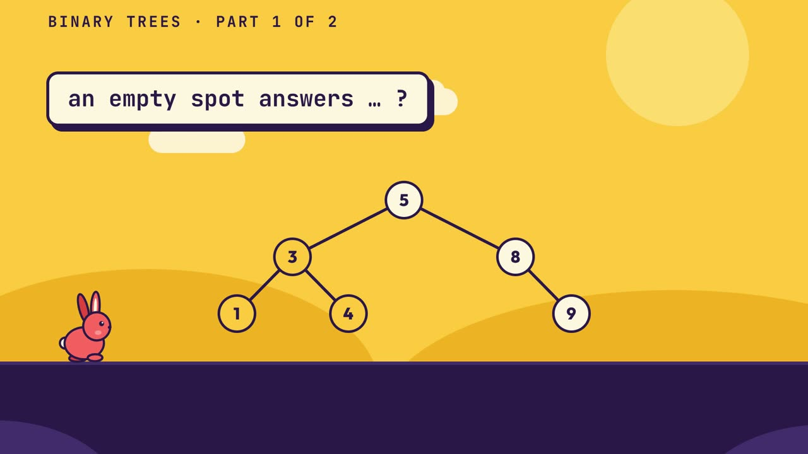
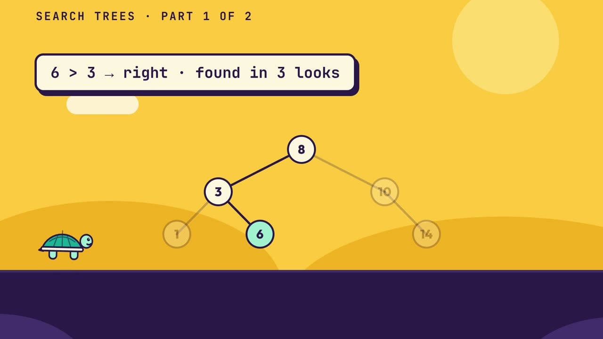

Try it yourself
Pick a chapter.
The course is split into parts, and each part into numbered chapters. A part ends with a mixed set: puzzles from all its chapters with no labels. Everything runs in the browser: videos that stop for your guess, then practice. Start with Part 0; chapter 1 introduces Burrow Hill and its characters.
Part 0: Foundations · start here, no chapters
 Six lessonsFoundationsHow a computer works, loops and the call stack, the Big O shapes and rules, memory, and reading input limits. Six lessons and 28 practice questions. About 8 minutes of video.Open Part 0 →
Six lessonsFoundationsHow a computer works, loops and the call stack, the Big O shapes and rules, memory, and reading input limits. Six lessons and 28 practice questions. About 8 minutes of video.Open Part 0 →
Part 1: Rows and chains · chapters 1 to 9, then a mixed set
 Chapter 1ArraysMeet Pip and Moss. Why any door is one jump away, what a row makes slow, and six problems, each with its own solution video. About 10 minutes of video.Open chapter 1 →
Chapter 1ArraysMeet Pip and Moss. Why any door is one jump away, what a row makes slow, and six problems, each with its own solution video. About 10 minutes of video.Open chapter 1 →

Chapter 2StringsWhy a word is a read-only row, why every change is a copy, and how letters become numbers you can count. Four problems, each with its own solution video. About 8 minutes of video.Open chapter 2 → Chapter 3Hash MapsMeet Hazel. How a key becomes a door number, and the three questions a map answers in one step. Six problems, each with its own solution video. About 10 minutes of video.Open chapter 3 →
Chapter 3Hash MapsMeet Hazel. How a key becomes a door number, and the three questions a map answers in one step. Six problems, each with its own solution video. About 10 minutes of video.Open chapter 3 →
 Chapter 4Prefix SumsAdd once, then answer any range sum with one subtraction. Then pair the totals with a map. Four problems, each with its own solution video. About 9 minutes of video.Open chapter 4 →
Chapter 4Prefix SumsAdd once, then answer any range sum with one subtraction. Then pair the totals with a map. Four problems, each with its own solution video. About 9 minutes of video.Open chapter 4 →
 Chapter 5Two PointersTwo ends walking in on a sorted row, and a reader with a writer for changing an array in place. Six problems, each with its own solution video. About 11 minutes of video.Open chapter 5 →
Chapter 5Two PointersTwo ends walking in on a sorted row, and a reader with a writer for changing an array in place. Six problems, each with its own solution video. About 11 minutes of video.Open chapter 5 →

Chapter 6Sliding WindowA frame that moves along the row and never starts over: first a fixed size, then one that grows and shrinks. Six problems, each with its own solution video. About 11 minutes of video.Open chapter 6 →
Chapter 7StacksA pile where only the top can be touched: brackets, undo, and the monotonic stack that finds every "next bigger" in one pass. Six problems, each with its own solution video. About 11 minutes of video.Open chapter 7 → Chapter 8QueuesFirst in, first out, and the trap that makes a JavaScript queue slow. A short chapter: one lesson and two problems. About 5 minutes of video.Open chapter 8 →
Chapter 8QueuesFirst in, first out, and the trap that makes a JavaScript queue slow. A short chapter: one lesson and two problems. About 5 minutes of video.Open chapter 8 →
 Chapter 9Linked ListsNodes and arrows: slow to reach, cheap to change. Save next, the dummy node, and fast and slow walkers. Six problems written with real node code. About 11 minutes of video.Open chapter 9 →
Chapter 9Linked ListsNodes and arrows: slow to reach, cheap to change. Save next, the dummy node, and fast and slow walkers. Six problems written with real node code. About 11 minutes of video.Open chapter 9 →
 Part 1 · Mixed setMixed Set 1Ten new puzzles from chapters 1 to 9, with no labels. Choosing the tool is the exercise; each solution video names it at the end. About 14 minutes of video.Open mixed set 1 →
Part 1 · Mixed setMixed Set 1Ten new puzzles from chapters 1 to 9, with no labels. Choosing the tool is the exercise; each solution video names it at the end. About 14 minutes of video.Open mixed set 1 →
Part 2: Recursion, searching and sorting · chapters 10 to 13, then a mixed set
 Chapter 10RecursionA function that calls itself: the base case, the step, the call stack, and why to trust the smaller answer. Four problems, the last one with a memo. About 9 minutes of video.Open chapter 10 →
Chapter 10RecursionA function that calls itself: the base case, the step, the call stack, and why to trust the smaller answer. Four problems, the last one with a memo. About 9 minutes of video.Open chapter 10 →
 Chapter 11Binary SearchHalve what is left with every look: the exact loop, the first-that-fits edge, and searching the answer itself. Seven problems. About 17 minutes of video.Open chapter 11 →
Chapter 11Binary SearchHalve what is left with every look: the exact loop, the first-that-fits edge, and searching the answer itself. Seven problems. About 17 minutes of video.Open chapter 11 →

Chapter 12SortingWhat a sort costs, how to sort by your own rule, and how to spot the problems that become easy once the input is in order. Three problems. About 6 minutes of video.Open chapter 12 → Chapter 13IntervalsThings with a start and an end: sort them, sweep once, and merge, count or pick as you go. Five problems. About 11 minutes of video.Open chapter 13 →
Chapter 13IntervalsThings with a start and an end: sort them, sweep once, and merge, count or pick as you go. Five problems. About 11 minutes of video.Open chapter 13 →
 Part 2 · Mixed setMixed Set 2Ten new puzzles from everything so far, with no chapter label: choosing the tool is the exercise. Each has an intro and a solution video. About 18 minutes of video.Open mixed set 2 →
Part 2 · Mixed setMixed Set 2Ten new puzzles from everything so far, with no chapter label: choosing the tool is the exercise. Each has an intro and a solution video. About 18 minutes of video.Open mixed set 2 →
Part 3: Trees, heaps and tries · chapters 14 to 17, then a mixed set

Chapter 14Binary TreesA node with two children. Walk it deep first with recursion, or level by level with a queue, and know when to pick which. Eight problems. About 17 minutes of video.Open chapter 14 →
Chapter 15Binary Search TreesA tree with one rule: smaller on the left, bigger on the right. Search by picking a side, and read it in sorted order. Four problems. About 10 minutes of video.Open chapter 15 →